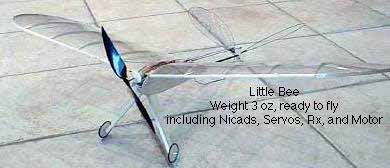
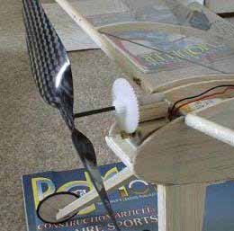

Andreas' Little Bee |
  |
Little Bee ARF kit from Wes:
The kit is advertised as an ARF, but it is not. You have to cover the wings and tailfeathers and construct the wingtips, built and install the landing gear, cover the fuse top and bottom with balsa and sand to shape, install the motor mount with proper downthrust, build the pushrods. I added a piece of music wire for a drag support at the end of the tailboom.
2 x Wes 2.4 g servos
DC 5-2.4 propulsion kit 1b with carbon prop
JMP 0.7 g speed control from Clancy Aviation
FMA Tetra Submicro RX
6 x 50 mah or 8 x 50 mah Sanyo from Kenway
Flys fantastic, duration 4-6 min. Pretty sturdy, in my first take off I had the V-tail servos reversed,the hard landing did no harm.
Fly slow and prosper
Copyright 1998, Thayer Syme. All rights reserved